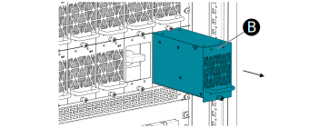
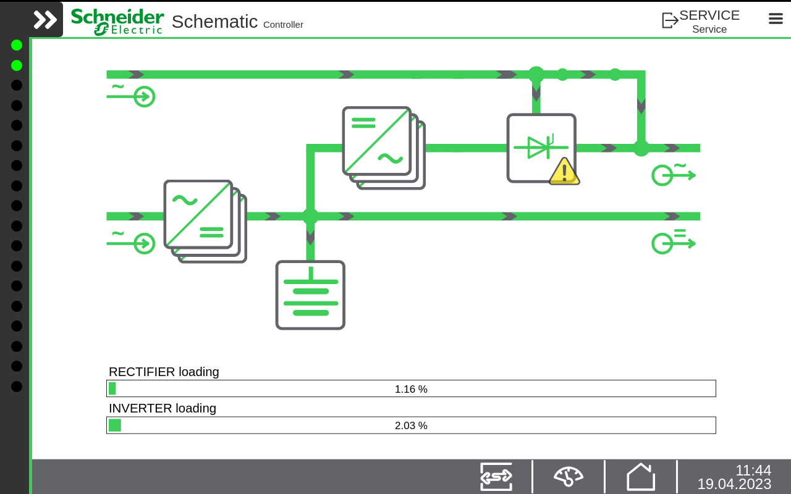

Always use appropriate personal protective equipment (PPE).
Follow safe electrical work practices. See NFPA 70E or CSA Z462.
Only qualified personnel are allowed to replace power modules.
All protective covers and blind covers must be installed when
the module is replaced.
Do not install power modules that have been damaged in any way
or that have an unknown operational state.
Keep a minimum distance of 200 mm (8 in) from the cabinet front
while the system is energized.
Do not reach or use any tools inside the empty power module slot.
Warning
Falling module and sharp edges
Always wear protective gloves when handling modules.
If installing modules above shoulder height always use a hard
hat.
If needed use an appropriate platform ladder to reach the rack.
Always follow your site's safety recommendations and any local
laws and regulations.
Warning
Loss of output voltage
Make sure the static switch has the right settings (pre-programmed).
Important: If it is not
possible to verify that the static switch has the correct settings,
please contact your local Reality Service Center.
On the Display check that the Static switch icon does not have a warning icon and that no alarm LED is active.
On the Display check that the power flow indicates static switch
output.
Open the door and
rotate the manual bypass switch to the bypass output position (Position
1).
The load is now supplied by the bypass.
Switch off the supply to the inverter modules
by either:
If the system has an inverter input breaker: Open
the inverter input breaker.
If the system does not have an inverter input breaker: Open the rectifier mains breaker(s) and the battery breaker.
Wait until the LEDs on the inverter
modules and the static switch are extinguished.
Loosen the screw (A) of the module.
Remove
the module (B) completely with both hands.

Correctly
dispose of the module according to your local laws and regulations.
Carefully
insert the new module (B) with both hands.
Make
sure that the module is fully inserted and that the module front is
flush to the protective covers.
Tighten
the screw (A) at the bottom.
Switch back the supply to the inverter
modules by either:
If the system has an inverter input breaker: Close
the inverter input breaker.
If the system does not have an inverter input breaker: Close the rectifier mains breaker(s) and the battery breaker.
Close the inverter input breaker.
When the module is initializing both the red LED and the
green LED flashes fast. When the module is operating correctly only
the green LED is illuminated.
Close the door.
On the Display check that no alarm LED is
active.On the Display check that no alarm LED is active except the Manual bypass
active and SBS Fault, if they are
used.
Note: There will be a warning triangle on the Static
switch icon that indicates the SSW is in bypass or inverter
output.
On the Display check that the power flow indicates bypass output.

Check the system settings in Settings > Reality
Modular AC > System settings before rotating the manual
bypass switch.
Open
the door and rotate the manual bypass switch to the static switch
output position (Position 0).
Close the door and
check that the Display indicates the correct
power flow and that no alarm LED is active.